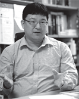
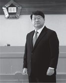
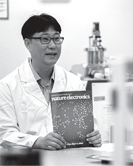

university dedicated to innovation and steadfast support for students’ dreams
university taking pride in helping students be satisfied and develop themselves
university equipped with facilities that allow researchers to immerse themselves in their studies
Chungbuk National University,
where your great challenge for a better future begins
CBNU students are full of pride.
I received a lot of help from career development services and scholarship benefits, and especially academic and career counseling from my supervisor through the Lifelong Mentorship Program was the best. Through this program, I found what I was good at and how I could contribute to society. With this knowledge, I was able to start planning for my future. So, I am now able to take my first step into the real world with confidence. As a CBNU graduate, I will do my best with pride and have a sense of responsibility towards my neighbors and the community.
- Ahn, Hong-Ja, Dept. of Nursing Science (enrolled in 2020)
Job Placement Service and Startup Support System
● Gap-Zero Self-Employment Program
Gap-Zero
Self-Employment
Program :
Preparing You
to be a Perfect
Job Seeker
● Career Services
● Customized support through the unification of start-up-related departments
● Start-up talent discovery program and consulting for selection of Korean-style I-Corps
Financial Support for cultivating Innovative talent
- 1st place
-
1st Place in the ratio of
educational spending to tuition among
Flagship National Universities
(JoongAng Daily, 2022)
- 88,108counseling
-
From admission to employment,
Lifelong Mentorship Program with supervisor• the number of participating students: 20,609
• the number of counseling: 88,108 (2020-2022)
- 2nd place
-
2nd Place in the ratio of scholarship to
tuition among Flagship National Universities
(JoongAng Daily, 2022)• Average annual tuition per student:
4.27 million KRW
• Average annual scholarship per student:
2.99 million KRW (benefit rate: 86%)
- 4,121students
-
5 student dormitories to accommodate 4,121 students
• Housing priorities for freshmen (60%)
• New BTL dormitory under construction
(Osong, scheduled for opening in 2026)

CBNU enhances its global research competitiveness through innovation and challenge.
At CBNU, we are committed to inspirational research and knowledge to deal with issues of today’s society and humanity. As a research-oriented university, we are structuring a creative research ecosystem to increase our global competitiveness. In addition, to grow with local industries and to expand our values, we will try to establish the best industry-university-government-research platform in Korea.
- Lee Jun-Soo, Director of Office of Research Affairs (Department of Food Science and Biotechnology)
Achievements in Research and
Industry-University Cooperation
Public Disclosure Information in Higher Education in Korea, 2021- 2023
- Thesis Publication
-
Domestic
894.96publicationsInternational
(SCI-Level Academic Journals)
853.84publications
-
Total amount of
research projects
and research funding -
3,129projects
2,818billion KRW
- Technology Transfer
-
580cases
68billion KRW
-
Patent Applications
and Registrations -
Domestic
884applications / 560registrationsInternational
102applications / 17registrations
1 st Place
1st in Technology Transfer Income per faculty member among Flagship National Universities
1st in Patent Registration per faculty member among Flagship National Universities
World-class Research Facilities
-
AI SoC Convergence Research Center (AISRC)
Researcher training in the design of transformable, multi-chip, tile-structured, semiconductors using AI technology
Professor | Kim Hyung-Won, Head of Research, Professor of Electronics Engineering
-
Cancer Predisposing Network Research Center (CPRC)
Research on the pathogenesis of incurable diseases and tumor development, in partnership with other institutions such as the Korea Research Institute of Bioscience and Biotechnology (KRIBB), Genome Research Foundation, Stanley Research Center in the U.S., The National Cancer Institute in the U.S. (NCI), London University, etc.
Professor | Hong Jin-Tae, Head of Research, Professor of Pharmacy
-
Pulmonary Disease Research Center (PDRC)
Research on basic etiology related to lung diseases, and R&D
Professor | Kim Eung-Gook, Head of Research, Professor of Medicine
-
Division of Technology Growth for Public Research Output and Value
Developing Chungbuk New-growth Bio-industry products, such as a diagnosis product for vascular dementia using Aptamer-Exosome technology
Professor | Ahn Ji-Young, Head of Research, Professor of Microbiology
-
Companion Animal-based Translational Cancer Center (CATCC)
Developing a precision medicine platform using companion animal-based translational medicine as part of the Science, Technology, and ICT Globalization Project
Professor | Choi Kyeong-Chul, Head of Research, Professor of Veterinary Medicine

CBNU is taking the lead in creating a sustainable local community.
CBNU has been leading the education and development of the local community for over 70 years based on the dedication of 200,000 alumni. To deal with the upcoming digital era, CBNU is trying to develop a future education platform and create a sustainable society. In addition, it is cultivating leaders with a community-oriented mindset, who can actively address social issues by sympathizing with the pain and difficulty of neighbors. I always support CBNU's growth along with the local community.
- Lee Il-Woo, Vice President of SK Hynix (enrolled in 1990, College of Business)
Expanding Curricula on New, High-tech Fields
● Departments in the field of high technology
- • Department of Intelligent Systems and Robotics
- • Department of Automotive Engineering
- • Department of Pharmaceutical Biology
- • Department of Industrial Cosmetic Science
- • Department of Natural Materials
- • Department of Synchrotron Radiation Science and Technology
● Convergence Major Courses (total of 30)
- • Smart Factory
- • Smart City
- • Smart Power and Information Technology (IT)
- • Smart Design
- • Intellectual Property Smart Convergence
- • Future Car System
- • Autonomous Green Car Technology
- • Secondary Battery Convergence Technology
- • Semiconductor Materials and Equipment
- • Semiconductor Device Circuit System, etc.
Future-Oriented Curricula
-
1
Residential College,
which provides an all-round education to cultivate community values -
2
Student-Designed Major System,
which allows students to plan and design their education for themselves
(7 majors as of 2023) -
3
Subunit Major Programs
(e.g. Micro Degrees, etc.),
which allow students to study various major fields -
4
Chungbuk Integrated Extracurricular Administrative sysTem (CIEAT),
which is designed for personalized student guidance.
Voluntary WorkVoluntary work records (recent 3 years)
CBNU cultivates global leaders who communicate with a wider world.
I came to CBNU under the Global Korea Scholarship (GKS) program because I was curious about Cheongju, the place where “Jikji, (Anthology of Great Buddhist Teachings)” was made and also I wanted to study astronomy. I received a full scholarship from the government of South Korea, so I can concentrate on my studies. I’ve learned a lot about this country through many cultural experiences as well as the Global Supporters Program offered by the university. Participating in various events with my “BESTIES,” or foreign student helpers, was especially fun, and I was really able to enjoy my campus life. Thanks to Chungbuk National University, I’ve discovered a whole new world. I Love CBNU.
- Bianca Els, Department of Astronomy and Space Science (enrolled in 2022)
International Exchange Programs
- Institute of International Language Education(IILE)
- Exceptional foreign language education opportunities for students and the local community
- International Student Support Center (ISSC)
-
Comprehensive support programs from admission to graduation for foreign students
to give them a successful international student experience
- Global Korea Scholarship Program (GKS)
- A full scholarship program offered by the Ministry of Education of Korea to cultivate global talent
- Outbound and Inbound Student Exchange Programs
- Student exchange opportunities with universities around the world
- Korean Language Program (KLP)
-
Opportunities to learn Korean language and Korean culture
for international students’ needs
- Korea Immigration and Integration Program(KIIP)
-
Specialized education for immigrants in Chungbuk Province, commissioned by
the Ministry of Justice (over 100 courses with 1,200 participants each year)

CBNU tries to contribute to society through progressive research.
My research aims to develop useful technologies beneficial to everyone, so that it will be helpful to the future society. In addition, I want to introduce the latest technological trends and IT skills to my students so that they become leaders in the Fourth Industrial Revolution Era. The idea of contributing to society and creating future value inspires me to start new research projects.
- Kim Min-Koo, Associate Professor (Architectural Engineering)
-

Name of Researcher |
Kim Min-Koo,
Associate Professor of Architectural EngineeringThesis Title | Registration-Free Point Cloud Generation Technique Using Rotating Mirrors
Journal of Publication | COMPUTER-AIDED CIVIL AND INFRASTRUCTURE ENGINEERING -
Name of Researcher |
Park Hyun-Jung,
Professor of International BusinessThesis Title | Technology Readiness and Technology Paradox of Unmanned Convenience Store Users
Journal of Publication | JOURNAL OF RETAILING AND CONSUMER SERVICES -

Name of Researcher |
Cho Jung-Sang,
Associate Professor of Engineering ChemistryThesis Title | Porous Microspheres Comprising CoSe2 Nanorods Coated with N-Doped Graphitic C and Polydopamine-Derived C as Anodes for Long-Lived Na-Ion Batteries
Journal of Publication | NANO - MICRO LETTERS -

Name of Researcher |
Kim Hyung-Won,
Professor of Electronics EngineeringAwards | Selected as Regional Leading Research Center
(AI SoC Convergence Research Center (AISRC))
Funded by | National Research Foundation of Korea -

Name of Researcher |
Jeong Hye-Won,
Professor of MedicineThesis Title | BNT162b2-Induced Memory T Cells Respond to the Omicron Variant with Preserved Functionality
Journal of Publication | NATURE MICROBIOLOGY -

Name of Researcher |
Kim Kyung-Hwan,
Associate Professor of BiologyThesis Title | The Role of Histone Modifications: From Neurodevelopment to Neurodiseases
Journal of Publication | SIGNAL TRANSDUCTION AND TARGETED THERAPY -

Name of Researcher |
Kim Kyoung-Ho,
Associate Professor of PhysicsThesis Title | Efficient Photon Extraction in Top-Emission Organic Light-Emitting Devices Based on Ampicillin Microstructures
Journal of Publication | ADVANCED MATERIALS -

Name of Researcher |
Kang Hyun-Koo(Evan S.),
Assistant Professor of PhysicsThesis Title | Organic Anisotropic Excitonic Optical Nanoantennas
Journal of Publication | ADVANCED SCIENCE -

Name of Researcher |
Choi Sun-Woong,
Professor of Law SchoolAwards | Recipient of the National Academy of Sciences (NAS) Awards in Social Sciences
Funded by | National Academy of Sciences, Republic of Korea -

Name of Researcher |
Kwon Oh-Min,
Professor of Electrical EngineeringThesis Title | Some Novel Results on Stability Analysis of Generalized Neural Networks with Time-Varying Delays via Augmented Approach
Awards | 14 Accumulated Papers from January to October 2022, Top 4.596% of Average JCR IF Values /World's Top 1% for 6 Consecutive Years in Mathematics and Compound fields -

Name of Researcher |
Lee Dong-Ju,
Associate Professor of Advanced Materials EngineeringThesis Title | Recent Progress in Low-Dimensional Nanomaterials Filled Multifunctional Metal Matrix Nanocomposites
Journal of Publication | PROGRESS IN MATERIALS SCIENCE -

Name of Researcher |
Seo Dong-Back,
Professor of Management Information SystemsThesis Title | Comparing Factors Affecting Self-Disclosure Behavior Between German and South Korean SNS Users
Journal of Publication | TELEMATICS AND INFORMATICS -

Name of Researcher |
Kim Beom-Soo,
Professor of Chemical EngineeringThesis Title | Production of Polyhydroxyalkanoates and Astaxanthin from Lignocellulosic Biomass in High Cell Density Membrane Bioreactor
Journal of Publication | CHEMICAL ENGINEERING JOURNAL -

Name of Researcher |
Jeong Jae-Wook,
Professor of Information and Communication EngineeringThesis Title | Wafer-Scale Alignment and Integration of Micro-Light-Emitting Diodes Using Engineered Van Der Waals Forces
Journal of Publication | NATURE ELECTRONICS